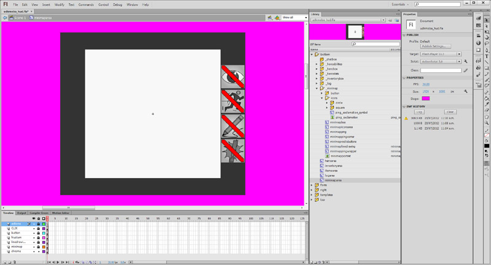

UDN
Search public documentation:
MOBAKitMinimap
中国翻译
한국어
Interested in the Unreal Engine?
Visit the Unreal Technology site.
Looking for jobs and company info?
Check out the Epic games site.
Questions about support via UDN?
Contact the UDN Staff
한국어
Interested in the Unreal Engine?
Visit the Unreal Technology site.
Looking for jobs and company info?
Check out the Epic games site.
Questions about support via UDN?
Contact the UDN Staff
MOBA Starter Kit - Mini map
Last tested against UDK May, 2012
Overview
The mini map is GUI tool which provides information about the world to the player in an accessible way.
Feature Set
The mini maps features are:
- Common interface to allow any kind of Actor to be represented on the mini map.
- Uses Scaleform; thus it is cross platform and allows any kind of animation per icon.
- Allows players to ping on the mini map that is then received by other clients.
- PC users must hold down the Ctrl button and then left click on the mini map to produce a ping. Or they can use the P shortcut to ping where their current hero location is.
- Mobile users must press the ping button located on the mini map chrome first, and then tap some where on the mini map to produce a ping.
- Console users do not currently have this functionality.
- Allows arbitrary drawing onto the mini map.
- PC users must hold down the Alt button and then left click and drag. As they move the mouse cursor around, lines are drawn.
- Mobile users must press the pencil button located on the mini map chrome first, and then tap and drag on the mini map to draw.
- Console users do not currently have this functionality.
- Allows players to click any where within the mini map to move the camera there.
- Mobile camera system uses a spring, as a locked camera system is used normally. Thus the camera will shift to the location on the mini map touch; but will spring back when the mini map is no longer touched.
- Console users do not currently have this functionality.
Mini Map Icons
Flash
Mini Map Icons
The mini map icons are stored in Flash as images. An external copy is also stored as PNGs so that Unreal Editor can also import those. You can optionally make animating mini map icons by adding in more frames in between each different icon. The mini map chooses the right mini map icons by asking the associated Actor (more information below) which frame to go to when displaying the movie clip. There are two mini map icons which represents units and towers. These are also set by asking the associated Actor (more information below) which symbol to choose when attaching the movie clip.Mini Map Area
 The mini map area is split up into several layers. The layers were used to preserve the rendering order:- actions - This layer contains the Actionscript for the mini map.
- CLIK - This layer contains the CLIK widgets for the mini map. It is important for CLIK widgets to be on the top most layer otherwise other layers can block the CLIK widget from receiving events from the mouse / touch.
- button - This layer contains the mini map button which is used to capture mouse clicks or touch events.
- frustum - This layer is used to draw the camera frustum.
- linedrawing - This layer is used to draw arbitrary lines on the mini map.
- minimap - This layer is used for rendering the mini map icons and mini map texture.
- chrome - This layer is used for rendering the chrome around the mini map.
Mini Map Box
The mini map box is the movie clip where all of the mini map icons. The layers are setup so that the rendering order is maintained between categories of mini map icons.- actions - This layer contains the Actionscript for the mini map.
- ping_icons - This layer contains all of the ping mini map icon movie clips.
- hero_icons - This layer contains all of the hero mini map icon movie clips.
- courier_icons - This layer contains all of the courier mini map icon movie clips.
- creep_icons - This layer contains all of the creep mini map icon movie clips.
- tower_icons - This layer contains all of the tower mini map icon movie clips.
- building_icons - This layer contains all of the building mini map icon movie clips.
- jungle_creep_icons - This layer contains all of the jungle creep icon movie clips.
- minimap_portrait - This layer contains the mini map texture which shows an birds eye view of the world.
Unrealscript
Unrealscript just handles the instancing and updating of the mini map icons. As Scaleform is used for this, Unrealscript is not at all responsible for rendering or animating the mini map icons at all.
UDKMOBAMinimapInterface
UDKMOBAMinimapInterface is a common interface which allows any actor implementing it to be displayed on the mini map and also allows it to modify the mini map icon. This allows individualistic modifications to mini map icons such as changing color, changing animation type.Functions
- GetMinimapLayer() - This returns an enum, defined within UDKMOBAMinimapInterface, which indicates on which layer this mini map icon should be instanced within. This allows finer control over how mini map icons should blend on the mini map. This is useful when you have important mini map icons which should always be drawn on top of other mini map icons.
- IsVisibleOnMinimap() - This returns true/false if the mini map icon should be visible or not. For example, if a Pawn needs to remove its mini map icon because it died; then it would return false when its health is or below zero. Otherwise it would return true.
- GetActor() - This returns the Actor that is implementing this interface. This allows you store an array of Interfaces instead of Actors to reduce type casting.
- GetMinimapMovieClipSymbolName() - This returns the AS Linkage name used by a MovieClip stored within Flash. This allows the code to instance different mini map icon MovieClips at the Actor's request.
- UpdateMinimapIcon() - This allows the Interface to modify its own mini map icon MovieClip. It could apply further offsets, change MovieClip parameters, play different animations, etc.
UDKMOBAGFxMinimapIconObject
Variables
- MinimapIconMCSymbolName - Stores the name of the mini map icon MovieClip symbol name which can be used as an identifier.
- MinimapInterface - Stores the mini map interface which this mini map icon represents. Saves having to type cast from the MinimapActor.
- MinimapActor - Stores the actor which this mini map icon represents.
- IsVisible - Stores whether this mini map icon is visible or not.
- FrameName - Stores the frame name that this MovieClip is currently in.
UDKMOBAGFx_HUD
Most of the actual work of updating the mini map is done within the GFx HUD class.Variables
- MinimapAreaMC - Cached GFxObject which points to the mini map area MovieClip.
- MinimapMC - Cached GFxObject which points to the mini map MovieClip.
- MinimapIconMCLayers - An array of all of the layers within the mini map (MinimapMC).
- MinimapIcons - An array of all of the UDKMOBAGFxSpellIconObject instances that are within this layer.
- LayerMC - Cached GFxObject which points to the mini map MovieClip.
- LayerMCWidth - Cached width of the LayerMC, this is in pixel coordinates within Flash resolution space.
- LayerMCHeight - Cached height of the LayerMC, this is in pixel coordinates within Flash resolution space.
- LayerMCName - Name of the MovieClip to look up when initializing this layer.
- Layer - Enum that this layer represents. Must be unique within this array!
- MinimapIconIndex - An index which is used to ensure that unique instance names are generated for the mini map names.
- MinimapInterfaces - An array of all of the mini map actor interfaces in the world.
Functions
ConfigHUD() is called when the GFx HUD is initializing. Here is where all of the persistent MovieClips are initialized and cached in Unrealscript as GFxObjects. All of the mini map layers are initialized here, by using what has been defined in the default properties. AddMinimapInterface() and RemoveMinimapInterface() are functions which allow other classes to modify the MinimapInterfaces array. This done so that tight control of the MinimapInterfaces array is maintained, as other classes should not be able to add and remove entries whenever they feel like. Additional checks to make sure duplicates and null entries are also check. Tick() is called from UDKMOBAHUD::PostRender() and is passed RenderDelta as the delta time. Within Tick(), UpdateMinimap() is then called. UpdateMinimap() is the main loop which updates the mini map icons.- UpdateMinimap() - There are first some early out checks to ensure that the update loop has everything that it needs. These early outs check if the local PlayerController, the local PlayerController's HUD and the Map's UDKMOBAMapInfo are all valid. From here we copy the MinimapInterfaces array to ProcessingMinimapInterfaces which contains references to all of the minimap interfaces that needs to be updated. Next, the MinimapIconMCLayers array is iterated through, and on each iteration each layer is updated one by one. In each layer, we then iterate through each of the actors stored in the layer. As we process and update the mini map icon location, we then remove it from the ProcessingMinimapInterfaces array. If the mini map icon's associated actor is not supposed to be visible on the mini map then the icon is hidden using SetVisible(false). The first iteration resolves mini map interfaces that already exist within the mini map layers. Any remaining entries in ProcessingMinimapInterfaces needs to be added to the appropriate mini map layer. By iterating through ProcessingMinimapInterfaces and then adding or replacing existing mini map icons we can add new mini map icons as needed. We also recycle old created mini map icons which were previously hidden.
Example implementation
UDKMOBACreepPawn
//=============================================================================
// UDKMOBAPawn
//
// MOBA base pawn to create hero/creep pawn archetypes used by the game. Has
// a lot of base functionality that are common to creeps/heroes.
//
// * Has weapon properties, UDKMOBA doesn't need to use the weapon system
// which comes with UE3 as a simplier method will suffice.
// * Has mana properties which are used for spells and so forth.
// * Has effects which happen when moving through water and other physical
// material effects.
// * Has teleport properties which are used when spawning.
// * Handles a lot of base stats used in most MOBA style games.
// * Handles creation of the screen space bounding box.
// * Handles the occlusion mesh effect when the pawn is hidden from view on the
// PC.
//
// Copyright 1998-2012 Epic Games, Inc. All Rights Reserved.
//=============================================================================
class UDKMOBAPawn extends Pawn
Abstract
HideCategories(Movement, Camera, Debug, Attachment, Physics, Advanced, Object)
Implements(UDKMOBAMinimapInterface, UDKMOBATouchInterface, UDKMOBAAttackInterface, UDKMOBAStatsInterface, UDKMOBACommandInterface)
Placeable;
// Snip
// Flash symbol name to use on the minimap
var(GFx) const string MinimapMovieClipSymbolName;
// Snip
/**
* Called when the pawn is initialized
*
* @network Server and client
*/
simulated event PostBeginPlay()
{
local int i;
local PlayerController PlayerController;
local UDKMOBAHUD UDKMOBAHUD;
// Snip
PlayerController = GetALocalPlayerController();
if (PlayerController != None)
{
// Add myself to the local player controller's HUD
UDKMOBAHUD = UDKMOBAHUD(PlayerController.MyHUD);
if (UDKMOBAHUD != None)
{
if (UDKMOBAHUD.HUDMovie != None)
{
UDKMOBAHUD.HUDMovie.AddMinimapInterface(Self);
}
}
}
// Snip
}
// Snip
/**
* This pawn has died
*
* @param Killer Who killed this pawn
* @param DamageType What killed it
* @param HitLocation Where did the hit occur
* @return Returns true if the pawn died
*/
function bool Died(Controller Killer, class<DamageType> DamageType, vector HitLocation)
{
local PlayerController PlayerController;
local UDKMOBAHUD UDKMOBAHUD;
// Snip
PlayerController = GetALocalPlayerController();
if (PlayerController != None)
{
UDKMOBAHUD = UDKMOBAHUD(PlayerController.MyHUD);
if (UDKMOBAHUD != None)
{
if (UDKMOBAHUD.HUDMovie != None)
{
UDKMOBAHUD.HUDMovie.RemoveMinimapInterface(Self);
}
}
}
// Snip
}
// ======================================
// UDKMOBAMinimapInterface implementation
// ======================================
/**
* Returns whether or not this actor is still valid to be rendered on the mini map
*
* @return Returns true if the mini map should render this actor or not
* @network Server and client
*/
simulated function bool IsVisibleOnMinimap()
{
return (Health > 0);
}
/**
* Returns the name of the movie clip symbol to instance on the minimap
*
* @return Returns the name of the movie clip symbol to instance on the minimap
* @network Server and client
*/
simulated function String GetMinimapMovieClipSymbolName()
{
return MinimapMovieClipSymbolName;
}
//=============================================================================
// UDKMOBACreepPawn
//
// Variation of UDKMOBAPawn which is used for the creeps in the world. Creeps
// have a sight range, they give money when they are killed, give experience
// to heroes when killed and are owned by a creep factory placed in the map.
//
// Copyright 1998-2012 Epic Games, Inc. All Rights Reserved.
//=============================================================================
class UDKMOBACreepPawn extends UDKMOBAPawn;
// Snip
// ======================================
// UDKMOBAMinimapInterface implementation
// ======================================
/**
* Returns what layer this actor should have it's movie clip in Scaleform
*
* @return Returns the layer enum
* @network Server and client
*/
simulated function EMinimapLayer GetMinimapLayer()
{
return EML_Creeps;
}
/**
* Updates the minimap icon
*
* @param MinimapIcon GFxObject which represents the minimap icon
* @network Server and client
*/
simulated function UpdateMinimapIcon(UDKMOBAGFxMinimapIconObject MinimapIcon)
{
local PlayerController PlayerController;
local string DesiredFrameName;
PlayerController = GetALocalPlayerController();
if (PlayerController != None)
{
DesiredFrameName = (PlayerController.GetTeamNum() == GetTeamNum()) ? "friendly" : "enemy";
if (DesiredFrameName != MinimapIcon.FrameName)
{
MinimapIcon.GotoAndStop(DesiredFrameName);
}
}
}
Mini map Frustum
The mini map frustum is a rendered box on the mini map which represents the camera view. This indicates to the player the area of the map that the game is currently showing. While you can draw arbitrary lines on the Canvas, it is more desirable to be able to draw the lines using Actionscript. This allows the UI designer to indicate at which layer he/she wishes to have the camera frustum drawn in, and also apply other effects as well.
Flash
MOBAMinimapLineDrawing
Functions
- drawLine() - Draws a line on the movie clip using the Flash Graphics interface.
- clear() - Clears all of the drawn lines on the movie clip using the Flash Graphics interface.
Unrealscript
UDKMOBAGFx_HUD
Functions
ConfigHUD() is called when the GFx HUD is initializing. Here is where all of the persistent MovieClips are initialized and cached in Unrealscript as GFxObjects/GFxClikObjects. Tick() is called from UDKMOBAHUD::PostRender() and is passed RenderDelta as the delta time. Within Tick(), UpdateMinimapFrustum() is called. UpdateMinimapFrustum() is the main loop which updates the mini map frustum.- UpdateMinimapFrustum() - This is the main update camera frustum update loop. We first ensure that the function has access to the local PlayerController, the local PlayerController's HUD and the Map's MapInfo. Next, the player view point is grabbed. The resultant CameraLocation and CameraRotation represent the player's camera location and rotation. From here, by peeking into the local game viewport client, we can get the current viewport size. This then can be used to represent the game view. 0.f; 0.f represents the top left corner 0.f; ViewportSize.X represents the top right corner and so forth. By deprojecting the screen coordinates, we the trace vector parameters needed to find the world location that the pixel coordinate represents. From here, it is trivial to convert the location from world space to mini map space. Once each of the four frustum coordinates are in mini map space, we send them to MinimapFrustumMC which is able to draw lines in Scaleform.
UDKMOBAGFxMinimapLineDrawingObject
Functions
- Init() - This function initializes the widget by setting the Width, Height, HalfWidth and HalfHeight.
- DrawLine() - This function draws a line on the MovieClip. This is a wrapper function for the Actionscript function called drawLine.
- Clear() - This function clears all of the lines draw on the MovieClip. This is a wrapper function for the Actionscript function called clear.
Variables
- Width - Cached width of the movie clip.
- Height - Cached height of the movie clip.
- HalfWidth - Cached half width of the movie clip.
- HalfHeight - Cached half height of the movie clip.
Mini map Ping
Pinging on the mini map allows you to indicate to other players where something important is happening. The ping can also be generated by in game events, such as when the towers are being attacked.
Unrealscript
UDKMOBAGFx_HUD
Functions
- PerformPingUsingWorldSpaceCoordinates() - This function converts the location in world space to screen space which is then forwarded to PerformPingUsingScreenSpaceCoordinates().
- PerformPingUsingScreenSpaceCoordinates() - This function automatically converts from screen space to mini map space and then displays an animated movie clip on the mini map. The mini map is colored as the player's color that sent the ping.
Mini map Commands
The mini map can also be used as a command interface to perform movement, attacks or to follow friendly units. This is achieved on the PC platform by right clicking on the mini map. On the mobile platform this is done by setting the correct radio button and then tapping on the mini map.
Unrealscript
As Flash does not intercept the right mouse button, we initially have to intercept the right mouse button using Unrealscript. We then grab the coordinates of the mouse at the time of the right click and then process the command from there. On the PC the right mouse click is first intercepted at UDKMOBAPlayerController_PC::PlayerCommanding::StartFire() when FireModeNum is 1. This sets UDKMOBAHUD_PC.PendingRightClickCommand to true. When UDKMOBAHUD_PC::PostRender() is called from native code, it calls UDKMOBAHUD_PC::ProcessCommands(). This function processes all pending commands. If UDKMOBAGFx_HUD.bCapturingMouseInput is true, then the right click is passed to UDKMOBAGFx_HUD. UDKMOBAGFx_HUD.bCapturingMouseInput is set true, when the mini map receives the mouse over event. UDKMOBAGFx_HUD::HandlePendingRightClickCommand() checks if the mouse is within the mini map bounds. If it is, it then calls UDKMOBAGFx_HUD::PerformMoveUsingMinimap(). UDKMOBAGFx_HUD::PerformMoveUsingMinimap() converts the mini map space location to world location, and then sends the move command. On Mobile the touch events are first stored in an array called TouchEvents from UDKMOBAPlayerController_Mobile::InternalOnInputTouch(). When UDKMOBAHUD_Mobile::PostRender() is called by native code, this calls UDKMOBAHUD_Mobile::ProcessTouchEvents(). This function iterates through all of the TouchEvents, and if UDKMOBAGFx_HUD.MinimapButtonPressed is true, then it routes the touch event to the HUD. UDKMOBAGFx_HUD.MinimapButtonPressed is set true, when the mini map has been touched.
Mini map Drawing
The mini map can also be used to draw on. This can be used by players to indicate to other players that something is happening in that area. On the PC platform, the player should hold down Shift and the left click and drag to draw lines. On the Mobile platform, the player selects the appropriate radio button and then taps and drags the mini map to draw. The line is colorized in the color that the player has been assigned.
Unrealscript
On the PC platform, the player presses and holds the Shift key to initiate drawing mode for the mini map. This is done by simply binding a key press and release to an exec function and setting a boolean, UDKMOBAPlayerController_PC.TrackMouseWhileLeftMouseButtonIsHeld. When UDKMOBAPlayerController_PC::PostRender() is called (passed on from UDKMOBAHUD::PostRender()). It asks the HUD's mini map line drawing movie clip to draw using screen space coordinates by calling UDKMOBAGFxMinimapLineDrawingObject::DrawUsingScreenSpaceCoordinates().
Functions
- UDKMOBAGFxMinimapLineDrawingObject.DrawUsingScreenSpaceCoordinates() - This functions draws a connecting line using the last recorded position and the new incoming position.

{kind=link}
{kind=link}
{kind=link}
{kind=link}